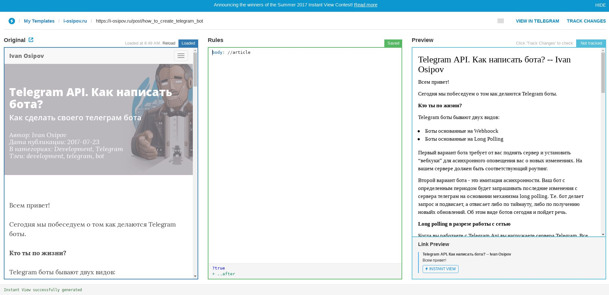
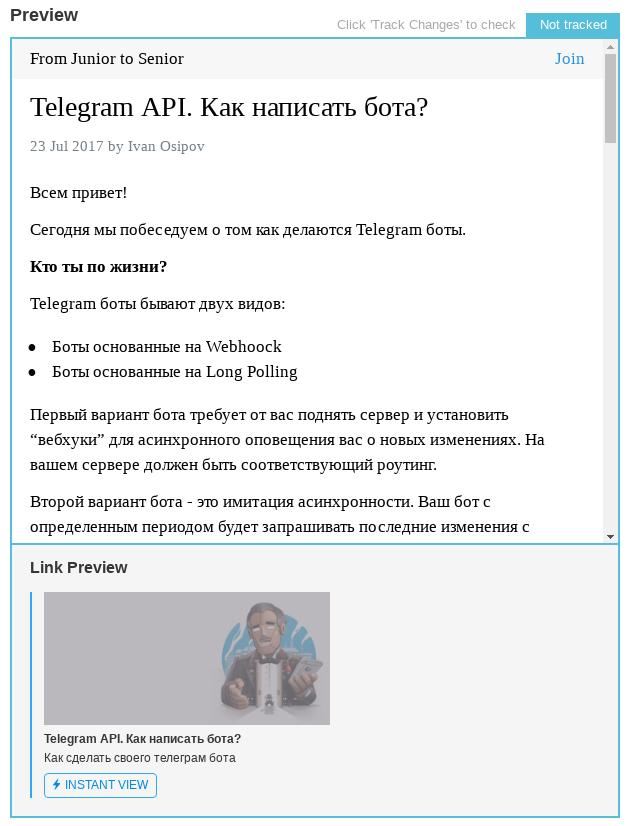

Telegram идет большими шагами по планете и масштабы постоянно растут. Многие из нас часто читают статьи на каналах, нажимают кнопку Instant View и вот, статья уже перед нами, но как это получилось? Instant View работает по первой ссылке, но почему не по каждой? Сегодня мы с вами разберемся как взять свой сайт и адаптировать Instant View к нему. Действовать мы будем на примере i-osipov.ru.
С чем мы имеем дело
Под капотом у i-osipov.ru находится hugo, hugo это генератор статического контента. Для понимания, когда я пишу пост - у меня есть отдельный проект на диске в котором есть предопределенные директории. В директориях лежит контент, например, в content/post/* находятся все посты на сайте, а при выполнении команды hugo в терминале стоя в корневой папке у меня генерируется статика, html + css + js, используется преднастроенная тема, в итоге статика выгружается в GitHub репозиторий, публикуется с помощью GitHub Pages, а i-osipov.ru лишь альтернативное имя, через которое доступен контент.
Как вы можете догадаться, формат статики определяю не я, определяет hugo. Теперь передо мной стоит задача разобраться в этом формате и научить Telegram генерировать Instant View для моего сайта. Прежде всего, источниом информации по этому вопросу для меня является instantview.telegram.org. С этой страницы мы узнаем о том, что Instant View (IV) - это механизм позволяющий открывать ваши ссылки прямо в телеграм, это отличный user friendly способ подать ваш контент, ваш сайт может быть не оптимизирован для мобильных устройств (это нас не так волнует, т.к. у hugo с этим почти всё в порядке), а слово Instant означает мгновенную загрузку и кеширование на серверах телеграмма.
Как работает Instant View
Втавка ссылки на внешний контент в текстовое поле влечет за собой цепочку событий: генерируется link preview - это короткая инфрмация о том какой контент доступен по ссылке, специальный Instant View Bot проверяет, есть ли шаблон IV для указанного сайта. После публикации шаблона он становится доступен всем пользователям Telegram. До процесса глобальной публикации вы можете давать ссылку читателям без процесса публикации и подтверждения, но об этом в разделе Публикация.
Создание Instant View
Редактор Instant View
С этого момента начинается процесс разработки, так что если у вас есть к чему прикрутить IV, то самое время взять ноутбук и приготовится.
Все манипуляции вашими IV происходят на странице instantview.telegram.org/my При первом входе вас попросят залогиниться через telegram. Далее вы даёте ссылку на любой контент (пост на котором мы будем отлаживать шаблон) на вашем сайте. Что именно вы выберете - не так важно, главное, чтобы верстка контента была примерно одинаковой. Я возьму один из последних постов. Редактор открылся, теперь мы видим следующую картину

Перед нами 3 рабочих пространства. Слева мы видим подгруженную, словно с телефона, версию страницы блога, по центру
расположилось поле для указания правил (это наше рабочее пространство), а справа мы видим результат - то, как примерно
будет выглядеть IV. На скриншоте по центру по умолчанию пусто, но для полноты я вписал туда body: //article. Такая
простая конфигурация говорит о том, что тело нашего Instant View будет парситься Instant View Bot’ом прямо из html тега
под названием article (выбранного благодаря xpath). Это первое из двух обязательных полей для создания Instant View, дальше мы разберем правила,
которые помогут сформировать качественное встроенное представление внутри Telegram из того контента, который доступен на
странице. При необходимости, вы можете перезагрузить исходную страницу и сохранить ваши описанные правила с помощью
ctrl + S или cmd + S.
В нижней части страницы располагается результат последней операции и вывод функции @debug на которую мы взглянем в разделе Дебаггер
С помощью символа # обозначается начало комментария, текст справа этого символа не интерпритируется.
Панель разработчика
Важнейший инструмент на этапе построения Instant View это Панель разработчика в вашем браузере. К примеру, в Google
Chrome она открывается при нажатии F12 или Ctrl + Shift + I, либо поищите в меню Дополнительные инструменты -
Инструменты разработчика.
Фильтрация контента
Помните, что Instant View предназначен для относительно стачесных статей, центральная страница динамичного сайта -
плохой кандидат для IV. Следовательно и не каждая станица интересующего сайта нам подойдет. Часто, статьи обособляются
html тегом <article> и это знак того, что на странице есть статья. Для того, чтобы по ошибке Instant View Bot не интерпретировал
ссылки на другие страницы сайта как встроенные, нам необходимо добавить условия.
Условия
Условия начинаются либо с ?, либо с ! по следующему формату:
?condition: xpath_query # пример условия
!condition: regexp # в правой части условия находится регулярное выражение
?condition # условие без параметров
Если условия следуют друг за другом, то они интерпретируются как единый блок, где ?-правила это ИЛИ, а !-правила
это И. В блоке условий должно быть как минимум одно условие ИЛИ.
Несколько блоков условий выглядят следующим образом:
?exists: //article
# здесь мы пишем правила, которые применим когда на странице есть тег article
?exists: //content
# здесь мы пишем правила, которые применим когда на странице есть тег content, а тега article может и не быть
?exists: //content
!exists: //article
# здесь мы пишем правила, которые применим когда на странице и есть тег contentи тег article
Конечно, кроме условия exists существуют и другие, ниже их полный список на текущий момент:
?domain: regexp # проверяет соответствует ли домен регулярному выражению
?domain_not: regexp # проверят не запрещен ли домен
?path: regexp # проверяет путь до текущей страницы соответствует регулярному выражению
?path_not: regexp # проверяет, что путь не соответствует регулярному выражению
?exists: xpath_query # проверяет наличие узла на странице
?not_exists: xpath_query # проверяет отсутствие узла на странице
?true
# правила здесь будут применены всегда
?false
# правила здесь не применятся никогда (по сути место для неработающих правил)
Для нашего примера я выбрал следующие условия:
?exists: //article
!domain: i-osipov\.ru
!path: /post/.+
Посты находятся всегда под i-osipov.ru/post/* и в каждом посте должен существовать тег article.
Свойства
Свойства содержат в себе значения и имеют следующий формат:
property: xpath_query
property: "Some string"
property: null
По умолчанию свойства не переопределяются, т.е. если не нулевое значение было записано в свойство, то для того, чтобы
его переопределить, нужно испрользовать символ !, т.е. конструкция property!: //content сможет обновить свойство,
если правая часть вернет не возвращает пустой результат и не null. Если же правая часть вернет пустой результат,
то значение не переопределится, для того, чтобы это произошло, необходимо воспользоваться !!. В результате,
property!!: //content перезапишет значение свойства вне зависимости от результата.
Ранее, я упоминал о том, что есть два свойства, которые обязательно нужно определить. Мы уже познакомились со свойством
body: //article, которое помогает Instant View Bot определить где же находится основной контент статьи. Второе,
обязательное к определению свойство это title, например, правило title: //article//h1 выберет заголовок первого уровня внутри
блока статьи и объяснит IV Bot’у, через свойство title, где же смотреть название статьи.
Рассмотрим другие свойства, которые нам доступны из коробки:
Формат описания
название: тип # пояснение
Для создания свойства в конструкциях ниже тип нужно заменить конкретным значением
title: RichText # заголовок страницы
body: RichText # тело страницы
author: String # имя автора
author_url: URL # ссылка на автора
published_date: Unixtime # дата публикации
description: String # краткое описание для превью ссылки
image_url: Url # ссылка на фото для превью ссылки
document_url: Url # ссылка на документ для превью ссылки
channel: String # указатель на авторский канал, например, @channelName
cover: Media # Обложка страницы
Для нашего примера, я обозначу следующие свойства
body: //article
title: //h1
channel: "@from_junior_to_senior"
description: //h2
Наших текущих знаний хватает только на такие простые манипуляции, но даже их достаточно для минимального варианта. Для полноты картины пока “захардкодим” остальные интересующие нас значения, например, так:
author: "Ivan Osipov"
author_url: "https://i-osipov.ru"
published_date: "2017-07-23"
image_url: "https://i-osipov.ru/img/posts/how_to_create_telegram_bot/header.png"
В следующих разделах мы с вами перепишем этот хардкод, но пока так.
Результат таких манипуляций ниже на скриншоте редактора:

Типы данных
В главе выше мы затронули типы и прежде всего необходимо пояснить, что страница Instant View содержит разные типы.
Каждый тип ассоциирован с html тегом, например, тип Header определяет объекты созданные на основе тегов <h1> - <h4>.
У типов есть допустимые дочерние типы, по сути, это те, кто могут быть вложены внутрь. Благодаря типам, практически
весь контент под тегом <article> может быть распознан без дополнительных усилий. Типы важная, но при этом довольно
простая составляющая Instant View, по этому полный перечень с описанием доступен по
ссылке.
На ваших страницах может быть представлен какой-либо код на опрежеденном языке, телеграм не поддерживает подстветку
синтаксиса, но они планируют сделать это в будущем. По этой причине, для больших блоков кода обособленных в <pre>
желательно указывать аттрибут data-language, как результат, подстветка кода в Instant View появится сама собой со
временем.
Переменные
Концепция переменных знакома вам из любого языка программирования. Здесь основное предназначение переменных - гибкое
манипулирование ими перед назначением их значений свойствам. Кратко, у нас есть идентификатор, который начинается с $,
например, $myvariable и есть значение. Идентификатор может быть только в нижнем регистре. Значение переменной может
быть xpath или строка, в последнем случае переменная будет содержать
список из одного текстового элемента в котором определен заданный в строке текст. Кроме того, вы можете назначить
переменной null, что позволяет сбросить значение в ней. Вы можете свободно менять значение переменной, если же вы
хотите назначить переменной значение только в том случае, если раньше никакое значение не было присвоено, то можно
воспользоваться символом ?, написанным после идентификатора, вот так $myvariable?,
в том месте, где происходит смена значений.
Резюмируя, мы можем менять значения переменных следующим образом:
$images: //img
$images: //img[@src] # значение переменной $images будет переопределено
$images?: //article//img # новое значение для переменной $images будет выставлено, если в переменной ничего не записано
Для того, чтобы объяснить вторую строчку и что же такое //img[@src] давайте поговорим о расширенном XPath.
Расширенный XPath
Прежде всего нужно сказать, что у нас есть чуть больше чем XPath для формирования выборки узлов html документа. Если вы пока не знакомы с XPath, то самое время это сделать. Начать можно отсюда. Кратко, XPath это язык, который позволяет навигироваться по XML. Нtml и Xml родственные форматы, по этому мы можем навигироваться и по Html. Взглянем на дополнительные возможности, которые дает нам расширенный XPath от Telegram.
Относительный XPath
В разделе Переменные мы узнали о таком типе правил как объявление переменных, здесь этот концепт нам пригодится. Стандартный XPath выполняет поиск по всему документу (мы указываем абсолютное выражение для поиска, искать будем от корня документа), однако, это порождает длинные цепочки описания путей до узлов. В расширенном XPath мы можем объяснить в каком контексте необходимо выполнять поиск при помощи переменных. Представим, что у нас есть следующее html дерево.
<body>
<article>
<h1>Заголовок 1 уровня</h1>
<h2>Заголовок 2 уровня</h2>
</article>
</body>>
Для навигации по такому дереву мы можем использовать стандартный XPath
//article/h1 # находит 'Заголовок 1 уровня'
//article/h2 # находит 'Заголовок 2 уровня'
Либо, так как мы изначально знаем о том, что поиск будет выполняться внутри узла article, то можем воспользоваться
переменной и таким образом задать контекст:
$myArticle: //article
$myArticle/h1 # находит 'Заголовок 1 уровня'
$myArticle/h2 # находит 'Заголовок 2 уровня'
Один узел вместо нескольких
Иногда, мы знаем, что XPath вернет нам несколько результатов, но мы хотим только первый, второй или любой другой из
них. По умолчанию XPath возвращает список узлов, однако, для того, чтобы сузить область поиска мы можем явно выбрать
один из полученных узлов с помощью выражения (xpath_query)[n], здесь n - это порядковый номер узла в списке,
полученном с помощью xpath_query. Нумерация начинается с 1, либо на месте n можно записать last() и тогда
будет выбран последний элемент. Такой синтаксис поддерживается только для всего выражения целиком. Ниже несколько примеров:
$headers: //h1 # все <h1> узлы на странице
$header2: (//h1)[2] # второй <h1> узел на странице
$header2: ($headers)[2] # аналогично предыдущему
$last_link: ($header2//a)[last()] # последняя ссылка (<a>) внутри контекста $header2
Выбор по css классу
Отличный инструмент, который мы получили с расширенным XPath это выражение has-class("class"), которое позволяет выбирать
узлы имеющие определенный класс. Это выражение - сокращение следующего
contains(concat(" ", normalize-space(@class), " "), " class ")
Я покажу практическое применение инструмента на своём же блоге, для которого настраиваю Instant View. Ранее мы присвоили свойствам title и description следующие значения:
title: //h1
description: //h2
Но это не до конца верно, правильнее ограничить контекст поиска и мы можем это сделать. Все заголовки документа могут
быть доступны только через div элемент с классом post-heading, зная это, мы можем воспользоваться has-class и
получим следующее обновление для нашего шаблона.
$header: //div[has-class("post-heading")]
title: $header/h1
description: $header/h2
Элемент одного уровня
XPath дает нам мощные возможности для поиска, но не всегда они легко читаемы, последние два улучшения - это сокрщенные
формы стандарных XPath выражений. В стандартном XPath мы можем донянуться до предшествующего sibling узла (по русски это
“элемент одного уровня”) следующим образом: preceding-sibling::*[1]/self, расширенный XPath дает нам сокращения в виде
prev-sibling, можно сравнить в применении:
$divsAfter: //div[./preceding-sibling::*[1]/self::img] # Собирает все div элементы предшествующие узлам img
$divsAfter: //div[./prev-sibling::img] # Сокращенная форма того же самого
Для последующих элементов есть аналогичное выражение next-sibling, которое является сокращением
following-sibling::*[1]/self.
Функции
Пожалуй важнейший и очень гибкий вид правил - функции. С их помощью вы сможете удалять ненужные элементы, производить
трансформации одних элементов в другие и так далее. Функции начинаются с символа @ и есть несколько разных форматов
их применения:
@function: xpath_query # функция без параметров
@function(param): xpath_query # дополнительный параметр указывается в скобках
@function(p1 p2): xpath_query # параметры могут быть разделены пробелом
@function(p1, "param #2"): xpath_query # или запятой и заключены в кавычки при необходимости
@function: "Some text" # вместо xpath можно использовать строки
У функции определяется основной аргумент, например, xpath выражение или строка. Основной аргумент записывается справа от “:“. В случае строки в качестве аргумента, на самом деле, будет передан список с одним тектовым элементом, который содержит указанный текст.
Разберем пример. Внутри тега <article>, который содержит контент статьи, находится блок с комментариями, это встроенные
Disqus комментарии. Однако, эти комментарии не поддерживаются в Instant View и нам необходимо их исключить. Для его
мы воспользуемся функцией @remove.
Открыв консоль разработчика в Chrome и выбрав элемент, который я хочу удалить, я обнаружил, что в DOM дереве исходной страницы есть два элемента. Эта часть дерева выглядит примерно так:
...
<noscript>Please enable JavaScript to view the <a href="http://disqus.com/?ref_noscript">comments powered by Disqus.</a></noscript>
<a href="http://disqus.com" class="dsq-brlink">comments powered by <span class="logo-disqus">Disqus</span></a>
...
Узел noscript довольно просто обнаружить и удалить. $body ниже это отсылка к телу статьи, к свойству
body, которое мы проинициализировали в самом начале используя XPath //article.
@remove: $body//noscript
Со ссылкой, следующей за узлом <noscript> всё не так очевидно, здесь мне помогла функция @debug, благодаря этой
функции вы можете понять находит ли XPath желаемый элемент или нет. Применение выглядит следующим образом:
@debug: $body//noscript
Результат применения вы увидите в самом низу страницы редактора.
Здесь я могу применить расширенный XPath и сказать “Удали все узлы <a> перед которыми есть узел того же уровня <noscript>”.
@remove: $body//a[prev-sibling::noscript]
Успех? Нет! Оказывается, из-за того, что сначала мы удалили noscript, а затем опирались на него при поиске a, то
интерпритатор в конце не нашел ни одного a у которого предшественник noscript. Понять это получилось опять же,
благодаря функции @debug. В результате, поменяв местами вызовы функции @remove мы последовательно удалили оба
не нужных элемента.
@remove: $body//a[prev-sibling::noscript] # Сначала удаляем ссылку следующую за noscript
@remove: $body//noscript # Затем удаляем сам noscript
Также функции могут явно или неявно работать со специальными переменными.
Специальные переменные
Когда мы работаем с функцией у которой справа записан xpath, то мы можем на следующей строке получитьрезультат этого
выражения не повторяя его. Этот результат хранится в переменной $$, т.е. мы можем сделать, например, так
description: $header/h2
@debug: $$
После чего внизу редактора увидим, какой же результат мы записали в description. Также каждая функция выполняет некую
трансформацию, обрабатывает входящие элементы и получает какой-то результат. Собственно, сам результат можно получить
из переменной $@. Итак:
$$- содержит результат самого последнего XPath выражения;$@- содержит значение возвращаемое последней запущенной функцией.
description: $header/h2 # определяет описание страницы
@debug # выводит описание, по умолчанию вместо xpath подразумевается $$
Другие функции
В конце этого руководства я приведу описание каждой из доступных функций, но для специфик применения, предлагаю обратиться к оригинальной документации по ссылкам. См. приложение А.
Используя изученные в приложении А функции мы можем, для начала, улучшить последний процесс удаления хвостов от disqus. Раньше мы удаляли хвосты так:
@remove: $body//a[prev-sibling::noscript] # Сначала удаляем ссылку следующую за noscript
@remove: $body//noscript # Затем удаляем сам noscript
Теперь мы воспользуемся функцией @combine, которая склеивает заданные узлы в один <noscript> узел. А затем удалим результат
склейки.
@combine: $body//noscript/next-sibling::a
@remove
Нам осталось разобраться, как правильно обозначить автора, дату публикации и ссылку на картинку для превью.
Для получения картинки, воспользуемся функцией @background_to_image, она преобразует стиль в элемент <img>.
Результат функции присвоим переменной $main_image, значение атрибутта src присвоим свойству image_url, а саму картинку
добавим в начало статьи. Всё это делается следующим образом:
@background_to_image: //header[has-class("intro-header")] # нашли картинку
$main_image: $@ # сохранили узел в переменную
@prepend_to($body): $main_image # вставили в начало контента
image_url: $main_image/@src # обозначили её как картинку для preview
Инструменты разработчика Chrome подсказывают, что оставшаяся интересующая нас информация находится в той же части
дерева элементов, что и заголовки для статей, по этому воспользуемся, уже определенным ранее $header. Нам осталось
извлечь из дерева имя автора и дату публикации. Извлечение данных, я сделал следующим образом:
$extra_meta: $header/span # уточняем поддерево с метаданными
$author: ($extra_meta/a)[1] # выбираем первую ссылку в списке
author: $author/text() # извлекаем её название, в моем случае это автор
@match("Дата публикации: ([0-9]{4}-[0-9]{2}-[0-9]{2})", 1): $extra_meta # в поддереве с метаданными ищем дату по регулярному выражению и забираем первую группу
published_date: $@ # присваиваем результат поиска
Встраиваемые элементы
В вашем случае могут быть медиа элементы, которые вы так же хотели бы встроить. Сегодня телеграм поддерживает следующие сервисы для встраивания в Instant View:
- Youtube
- Vimeo
- Tweets & Twitter Videos
- Facebook Posts & Videos
- Giphy
- SoundCloud
- GithubGist
- Aparat
- VK.com Videos
Включения (системные правила)
Включения - это системные правила и вам их нет необходимости использовать для собственных нужд, но знание того что это пригодится для понимания работы Telegram Instant View.
+ core.telegram.org # вставляет блок правил, который используется для core.telegram.org
?not_exists: $body # если не найдет, то ...
+ telegram.org # вставляет другой блок
Я вижу один вариант использования. Это если ваш сайт на одном движке с кем-то, для кого уже есть готовые правила
Обработка страниц
Все страницы обрабатываются по следующим правилам:
# Url: http://example.com/some_page.html
+ example.com
?true
+ ..after
Если же страница находится на поддомене, то она обрабатывается так:
# Url: http://some.subdomain.example.com/some_page.html
+ some.subdomain.example.com
?not_exists: $body
+ subdomain.example.com
?not_exists: $body
+ example.com
?true
+ ..after
Следовательно, сначала Instant View Bot ищет шаблон для полного домена и если он не находит проинициализированного свойства
body, то понижает уровнь домена и ищет шаблон для него. Блок правил ..after выполняется для всех доменов.
Instant View для поддоменов
Если страница обрабатывается для поддомена, то необходимо вручную выбрать уровень домена, который необходим в левом верхнем углу редактора.
Публикация
Для того, чтобы посмотреть результат нажмите на кнопку View In Telegram и если у вас есть десктопное приложение, то в нем вам предложат отправить кому-нибудь ссылку, которая будет открывать ваш тестовый пример через Instant View.
Публикация для всех пользователей Telegram происходит только после подтверждения вашего шаблона командой Telegram.
До этого момента вы можете распространять ссылки с истользованием шаблона, даже без подтверждения. Для этого вам нужно
составить ссылку в формате: t.me/iv?url=...&rhash=..., где url это ссылка на публикацию, а rhash - идентификатор
шаблона.
Бонус. Instant View и Cloudflare
В своих прошлых статьях, я рассказывал о том, что в качестве DNS серверов для i-osipov.ru используются DNS сервера
Cloudflare. Кроме того, Cloudflare это прокси защищающий от DDOS и при реализации Instant View я заметил одну небольшую
особенность. Из коробки этот замечательный сервис предоставляет услугу, которая называется ‘Email protection’, по сути
в определенном наборе ситуаций, которые можно детектировать как “бот, который обходит интернет и собирает email’ы для
спама”, Cloudflare заменят все email’ы обсусцирует email’ы на странице. Instant View Bot такой же подозрительный тип,
но всё ради безопасности. Тем ни менее, в статье про то “как написать бота для телеграма” есть полная форма команды
оправляемая телеграм боту, напомню что выглядит она вот так: /command@BotName. Проблема в том, что cloudflare распознает
как email всё что справа от слеша и отдает неправильную страничку боту. Как это исправить? Все подробности есть
здесь, если коротко,
то вы должны встроить в код страницы тег <!--email_off--> здесь cloudflare не будет защищать email'ы <!--/email_off-->.
Да, вы правильно поняли, для того, чтобы показать вам команду для бота и в этой статье, мне пришлось снова встроить
комментарии отключающие cloudflare email protection.
Шаблон для i-osipov.ru
В итоге, мы получили следующий шаблон:
?exists: //article
!domain: i-osipov\.ru
!path: /post/.+
body: //article
$header: //div[has-class("post-heading")]
title: $header/h1
description: $header/h2
channel: "@from_junior_to_senior"
$extra_meta: $header/span
$author: ($extra_meta/a)[1]
author: $author/text()
author_url: "https://i-osipov.ru"
@match("Дата публикации: ([0-9]{4}-[0-9]{2}-[0-9]{2})", 1): $extra_meta
published_date: $@
@background_to_image: //header[has-class("intro-header")]
$main_image: $@
@prepend_to($body): $main_image
image_url: $main_image/@src
@combine: $body//noscript/next-sibling::a
@remove
На самом деле в шаблон входит еще и обнотка неподдерживаемых таблиц, вместо них можно отображать ссылку на сайт с полным контентом. Как это сделать вы можете подглядеть в публичком шаблоне для i-osipov.ru или поразмышлять самостоятельно.
Заключение
Telegram Instant View это мощный инструмент, который поможет вам интегрировать ваш контент в инфраструктуру Telegram. Относиться к Instant View можно по разному, но на мой взгляд, если вы можете сделать жизнь вашего читателя еще лучше - сделайте это. Со своей стороны, я надеюсь, что этот документ поможет вам легко разобраться в создании Instant View и улучшить UX ваших статей. Для достижения совершенства обратите внимание на Чеклист Идеального Instant View.
Приложение А
Функции для детальной настройки форматирования
- @debug отладка команд, вывод результов в нижней части редактора;
- @append вставляет переданные элементы в начало каждого найденного по XPath;
- @prepend вставляет переданные элементы в конец каждого найденного по XPath;
- @after вставляет переданные элементы после каждого найденного по XPath;
- @before вставляет переданные элементы перед каждым найденным по XPath;
- @append_to вставляет целевой узел в конец базового;
- @prepend_to вставляет целевой узел в начало базового;
- @after_el вставляет целевой узел после базового;
- @before_el вставляет целевой узел перед базовым;
- @replace_tag изменяет имя тега;
- @wrap заворачивает целевой элемент в заданный тег;
- @clone создает копию целевого узла;
- @detach отделяет целевой узел от оставшейся части, создает копию родительского узла;
- @pre помечает текст внутри целевого узла как отформатированный;
- @set_attr устанавливает аттрибут в каждом соответствующем узле;
- @set_attrs устанавливает несколько аттрибутов;
- @match выполняет поиск на основе регулярного выражения, в результате, заменяет содержимое целевого узла;
- @replace выполняет замену на основе регулярного выражения;
- @urlencode кодирует url в соответствии с RFC 3986;
- @urldecode декодирует url в соответствии с RFC 3986;
- @htmlencode кодирует специальные символы в целевом узле в HTML сущности;
- @htmldecode декодирует специальные символы в целевом узле в HTML сущности;
- @background_to_image трансформирует целевой узел в
<img>тэг сsrcатрибуттом; - @json_to_xml трансформирует json контент целевого узла в xml;
- @html_to_dom парсит html узел и вставляет его в документ (в документации есть очевидный пример);
- @combine склеивает каждый следующий с предыдущим узлом, если такой существет;
- @datetime трансформирует дату и время из строки в unix time;
- @simplify системная функция для понимания того, как работает преобразование в Instant View;
- @inline встраивает iframe;
- @unsupported определяет, какие элементы не поддерживаются, для того чтобы не давать пользователю Instant View с неполным контентом.